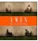

곡설명

초창기 멤버로 바이브의 윤민수가 있었으며, 그가 팀을 떠난 뒤에도 지속적인 교류가 이어져 바이브와 형제그룹으로 불리운 그들의 2010년 발매작 [The 3rd Generation]을 소개한다.
사랑하는 사람을 보낼 수 없는 아픔을 '못해' 라는 단어의 반복으로 노래한 "못해"는 전형적인 알앤비 발라드 형식으로 마지막 브릿지 파트에 여성 보컬리스트 '미'의 음성을 더해 애절함을 극대화했다.